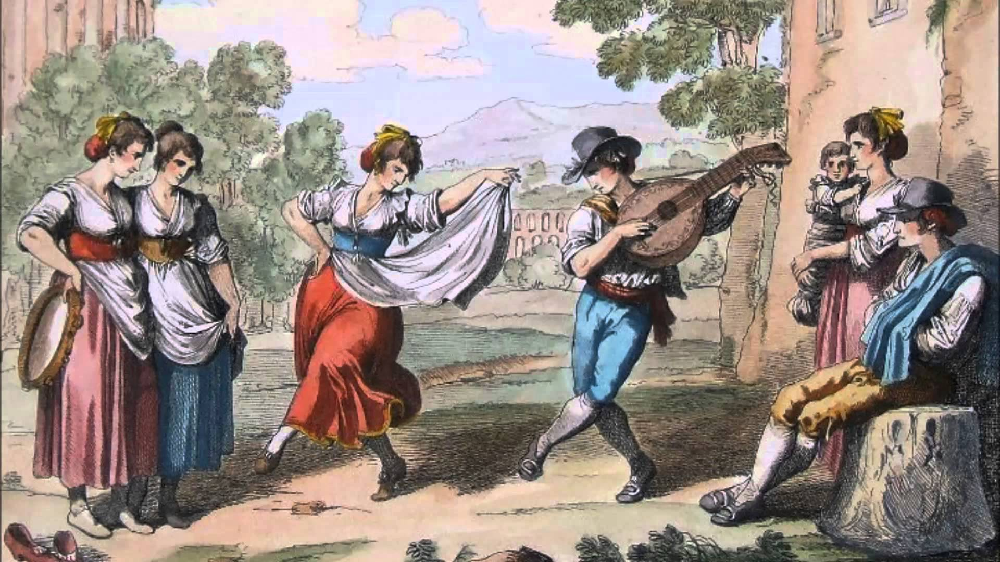
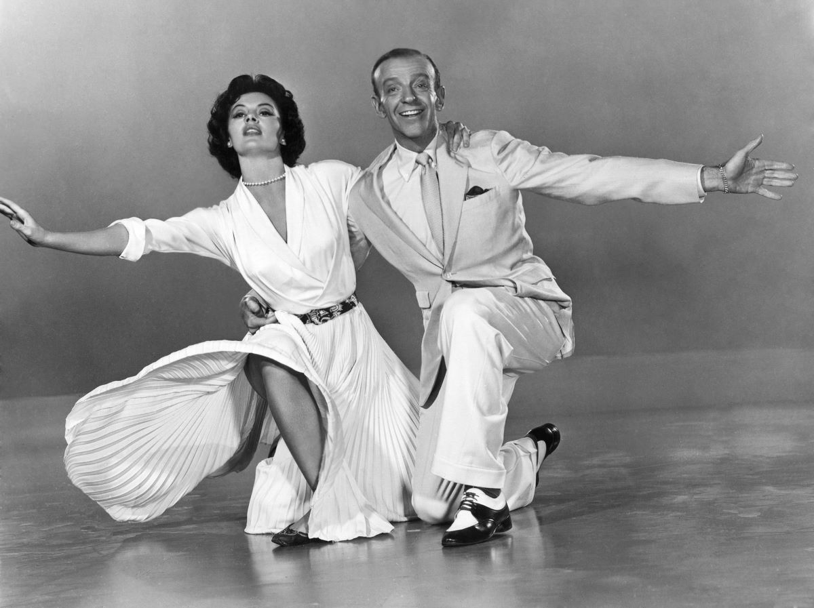

Dia Internacional da Dança |
||
|---|---|---|
História da dançaA história da dança é tão antiga quanto a humanidade, remontando aos primórdios da civilização. Com isso, essa evoluiu em etapas, conforme os avanços da sociedade e suas respectivas culturas. Desse modo, iniciou-se na dança primitiva até chegar na contemporânea, desafiando convenções. ESCALA EVOLUTIVA DA DANÇA:
Dança Primitiva:Nas civilizações antigas, como os egípcios, gregos e romanos, a dança era uma parte essencial de rituais religiosos, celebrações de colheita e cerimônias de passagem. Movimentos simples e ritmados eram usados para expressar alegria, tristeza, reverência e outras emoções. Idade Média e Renascimento:Durante a Idade Média, a dança foi influenciada pela Igreja Católica, sendo usada em representações litúrgicas. O Renascimento trouxe uma valorização maior das artes, incluindo a dança. Danças cortesãs elegantes e formais, como a pavane e a galliard, eram populares. Ballet Clássico:O surgimento do ballet clássico como o conhecemos hoje aconteceu na corte francesa no século XVII. O rei Luís XIV foi um grande patrono do ballet, estabelecendo a Academia Real de Dança em 1661. Coreógrafos como Jean-Georges Noverre e Marius Petipa contribuíram para a codificação do ballet, com suas narrativas elaboradas e movimentos técnicos. Danças Folclóricas e Tradicionais:Enquanto o ballet florescia na Europa, em outras partes do mundo, danças folclóricas e tradicionais eram mantidas vivas por comunidades locais. Estas danças, muitas vezes ligadas a festivais, rituais e costumes específicos, eram transmitidas oralmente ao longo das gerações. Dança Moderna e Contemporânea:No século XX, dançarinos e coreógrafos começaram a buscar novas formas de expressão. Isadora Duncan é frequentemente considerada uma pioneira da dança moderna, buscando movimentos mais livres e naturais. O século XX testemunhou uma explosão de estilos e abordagens, incluindo a dança contemporânea, que incorpora elementos de ballet clássico, danças étnicas e experimentação artística. Dança de Salão e Popular:A dança de salão, com suas raízes nas danças de salão das cortes europeias, também ganhou destaque no século XX. Estilos como a salsa, tango, samba e foxtrot se tornaram populares em todo o mundo, tanto em contextos sociais quanto competitivos. Ao mesmo tempo, o surgimento de gêneros musicais como o jazz, Rock'n'roll, hip hop e música eletrônica influenciaram novos estilos de dança. Dança Contemporânea:A dança contemporânea, desde meados do século XX até os dias atuais, continua a evoluir e desafiar convenções. Coreógrafos contemporâneos muitas vezes exploram temas sociais, políticos e pessoais através do movimento. Esta forma de dança muitas vezes é caracterizada por sua abordagem experimental, misturando técnicas e estilos de dança anteriores. ConclusãoEm suma, a dança é um registro diverso e fascinante da criatividade humana, refletindo as culturas, valores e emoções ao longo dos séculos. Portanto, é uma arte que evolui continuamente, se adaptando às mudanças no mundo ao seu redor e prevalecendo como uma forma corpulenta de expressão e celebração. A dança é a arte do movimento. Existem diferentes ritmos e estilos no mundo, cada um transmitindo os valores culturais de seu povo e época. Por existir no dia a dia de todos, a linguagem acabou se tornando uma das formas de expressão artística mais populares e democráticas do mundo, tornando-se uma poderosa ferramenta de expressão criativa, tanto profissionalmente quanto como forma de entretenimento. |
||